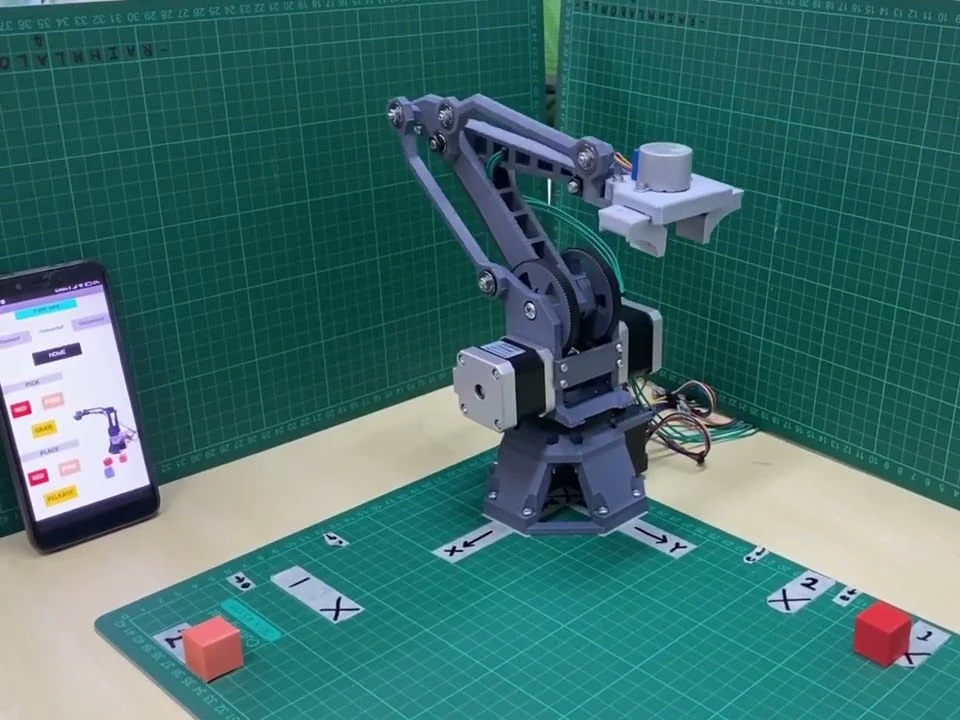
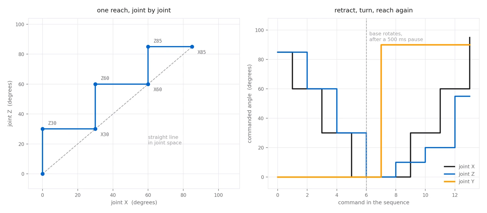
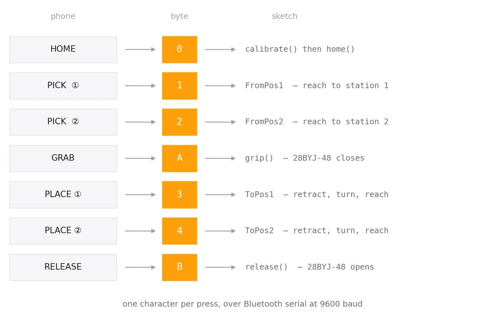
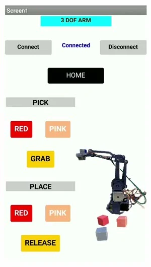

Three stepper joints and a gripper, running pick-and-place from a phone — on a 3D-printer board that never prints anything.

The controller is a RAMPS 1.4 — the shield that sits on an Arduino Mega and runs a 3D printer. It is an unusually good fit for a small arm: four stepper driver sockets, end-stop inputs with pull-ups already wired, and an enable line per axis. The printer firmware is gone; what is left is 488 lines of sketch that treat the three axes as three revolute joints.
No inverse kinematics, no trajectory planner. This arm knows where it is because it counts steps from a switch it has touched, and it knows where to go because somebody wrote the angles down.
A stepper has no idea where it is until it hits something.
Steppers are open loop. Power one up and it knows nothing — not its angle, not even which way is forward. Every absolute move in the sketch depends on fixing that once, at boot, and then never losing count.
So setup() does two things in order. Calibrate drives each joint, one at a time, toward its limit switch, stepping until the switch reads low. That is a known physical position, but it is the end stop, not a useful pose — the arm is folded against itself.
So home then walks a fixed number of steps back off the stop: 1680 steps on the first joint, 720 on the second, 3600 on the base. At 40 steps per degree that is 42°, 18° and 90°. Those counts are not derived from anything; they were measured on the machine. With the arm standing where it should, the angle bookkeeping is zeroed, and from that instant the sketch tracks every joint in degrees.
Every motion goes through one function, pick(angle, joint), and the first thing it does is subtract. The caller names an absolute target; the function turns it into a delta against the remembered position, takes the sign as the direction pin, and converts the magnitude into steps — 40 microsteps per degree, from driving the resolution pins for sixteenth-stepping.
Each step is a pulse and a wait: 100 µs low, 700 µs high. Eight hundred microseconds a step is deliberately slow — a printer moves a light hotend, while this is swinging an arm, and a stepper that skips has silently lied about its position with no encoder to catch it.
The limit switch is read again inside the stepping loop, so a joint that reaches its stop mid-move stops stepping rather than grinding. Once the move ends the remembered angle is updated, and that running total is the arm's entire sense of where it is.
No planner — a list of angles, interleaved by hand.
Four routines make up the whole repertoire: two that reach out to a pick station, two that put something down. Each is a plain list of pick() calls, and the interesting part is the order they are written in.
Reaching to the first station could be two commands — swing joint Z to 85°, then joint X to 85°. Instead it is six, alternating: Z30, X30, Z60, X60, Z85, X85. Because each call blocks until its joint arrives, alternating them in thirds makes the two joints take turns in small increments, and the end effector staircases along the diagonal instead of swinging out in one axis and then the other. It is linear interpolation done by hand, at a resolution of three.

Placing is the same idea with a safety property built in. The sequence winds both joints all the way back to zero before the base turns, pauses half a second, rotates 90°, and only then reaches out again. The arm is never long and swinging sideways at the same time — which is exactly the move that would sweep everything off the table.
The whole protocol fits in seven characters.
A Bluetooth module sits on the Mega's serial port at 9600 baud, and a phone app sends a single character per button press. The sketch reads one byte a loop and drops it into a switch statement. There is no parser, no framing, no acknowledgement — and at one keystroke per deliberate press, none of that is missed.
It is worth contrasting with the gesture hand, which streams five bits continuously and therefore needs a start marker and a fixed packet length to stay in sync. Here the commands are rare and idempotent, so the protocol can afford to be nothing at all.


Note what 0 does: it re-runs calibration and homing. Because the arm's position is a counter and nothing else, a skipped step or a nudge leaves it quietly wrong — and the fix is to go and touch the switches again. That button is the recovery path for the one failure this design cannot detect.
Four wires, eight phases, no driver chip.
The three joints have proper stepper drivers in the RAMPS sockets. The gripper does not — it is a 28BYJ-48, the small geared unipolar stepper, and the sketch drives its four coils directly by writing the eight-phase half-step sequence out one state at a time.
Half-stepping matters here: alternating between one coil energised and two gives twice the resolution of a full-step table and a good deal less vibration, which on a gripper is the difference between holding a cube and knocking it over. Closing runs the table forward, opening runs the same table backward, and both end by dropping all four pins low so the coils are not left heating up under a holding current.
INPUT_PULLUP0 home · 1 2 pick · 3 4 place · A grip · B releaseWritten by Paing Thet Ko, debugged by Kent, sponsored by Thura Zaw — as credited in the sketch header.